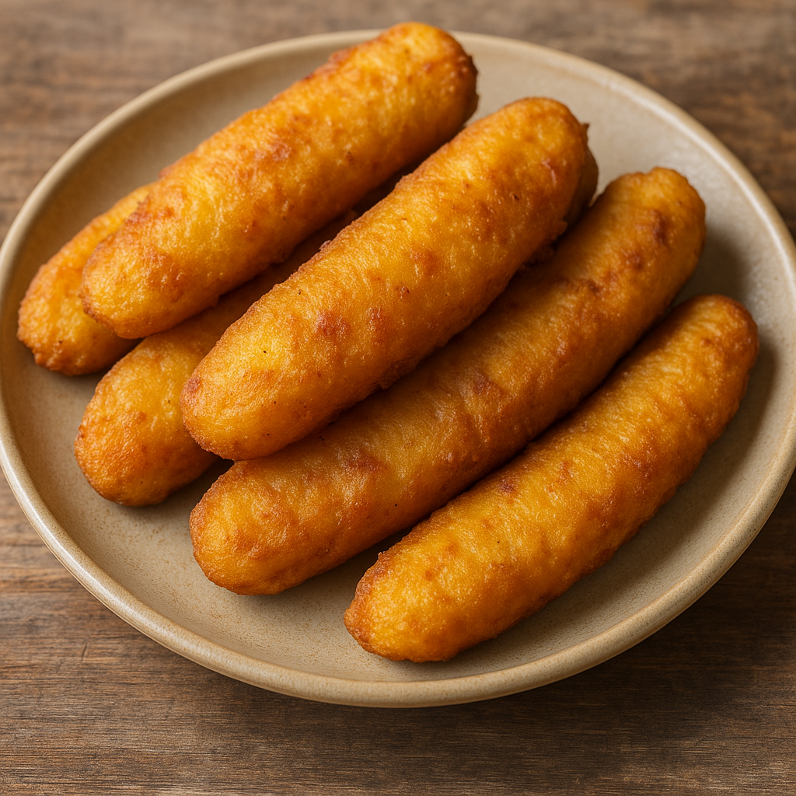

Banana Fritters

Description
Banana fritters, also known as pazhampori, are a popular Kerala tea time snack made with ripe bananas dipped in a lightly sweet batter and deep fried until golden and crispy.
Ingredients
- bananas (riped)
- all purpose flour
- sugar
- salt
- oil
- Turmeric powder
- water
Steps
- Peel the ripe bananas and slice them lengthwise into thin pieces.
- In a bowl mix flour salt,sugar and a pinch of turmeric powder.
- Add water gradually and whisk to form a smooth, thick batter.
- Heat oil in a pan on medium flame.
- Dip each banana slice into the batter,coating it evenly.
- Deep fry the slices untill golden brown.
- Take out and serve hot with tea.